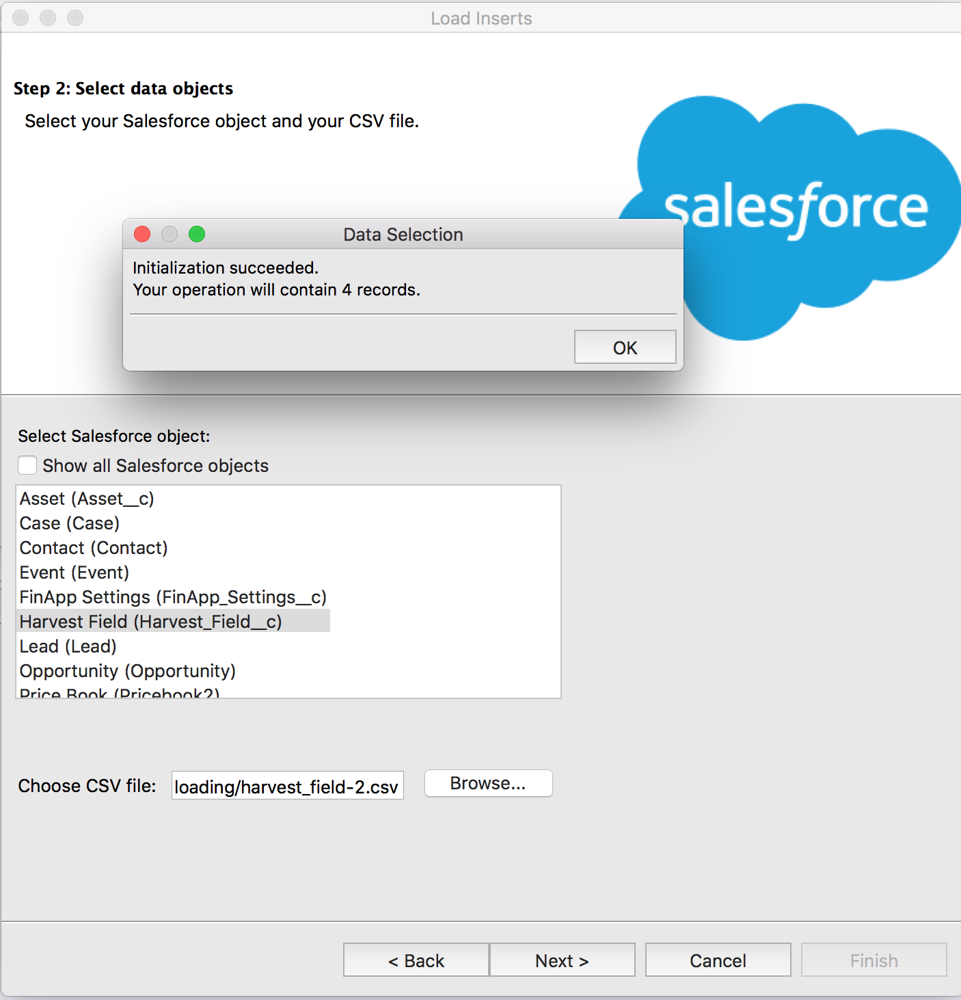
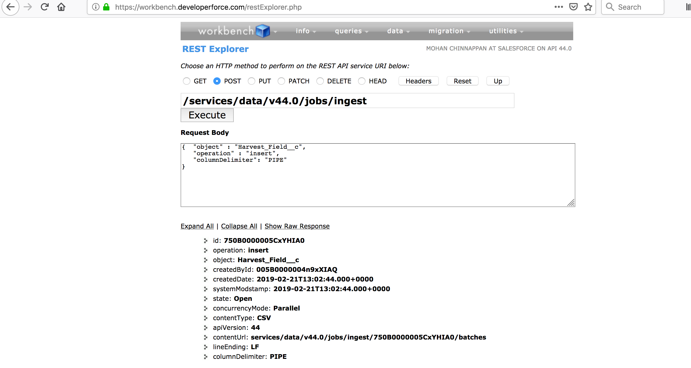
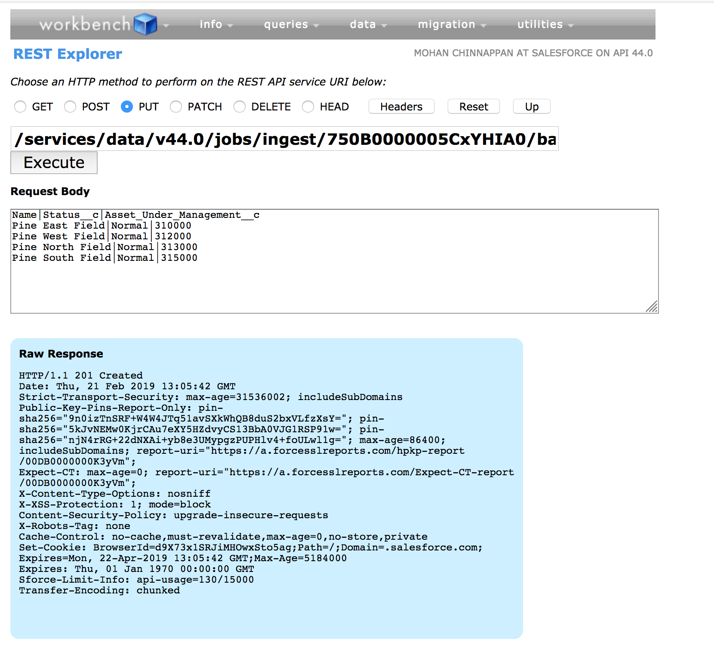
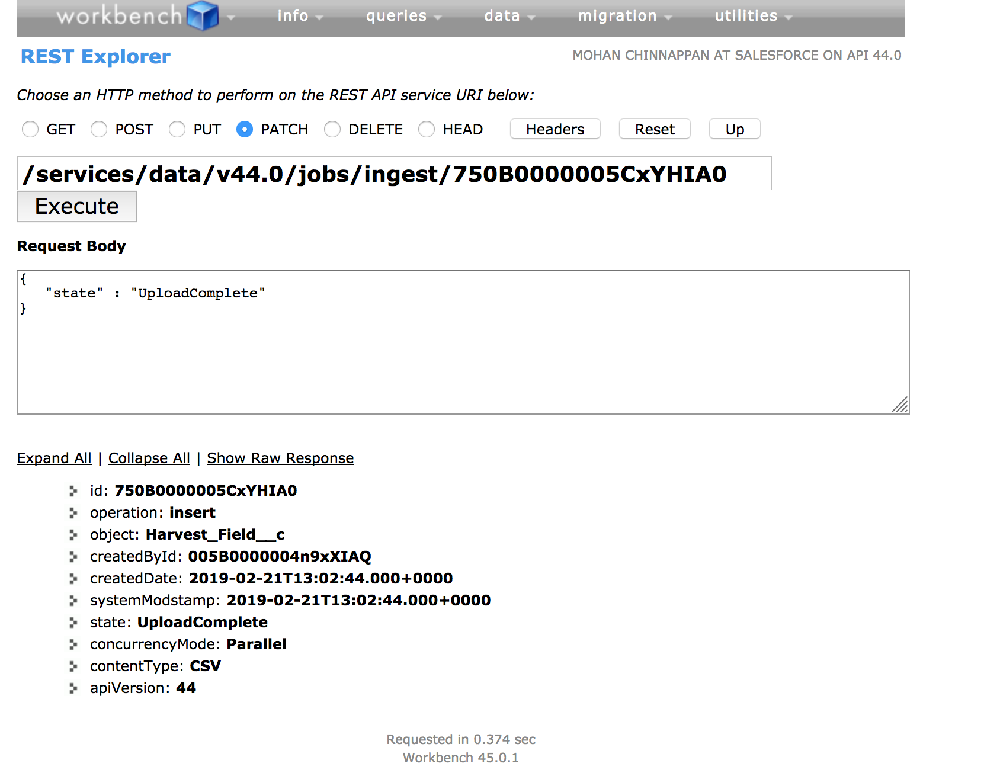
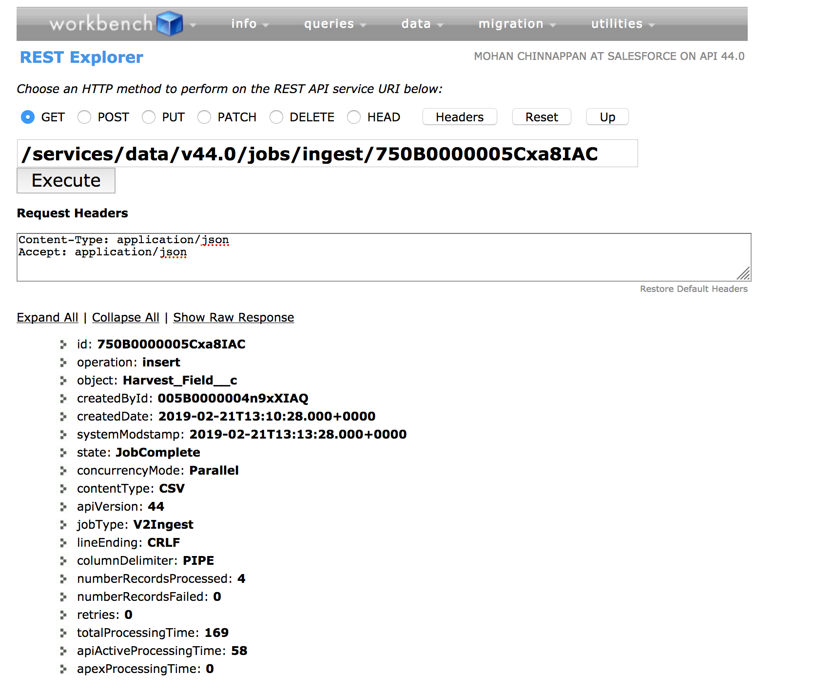
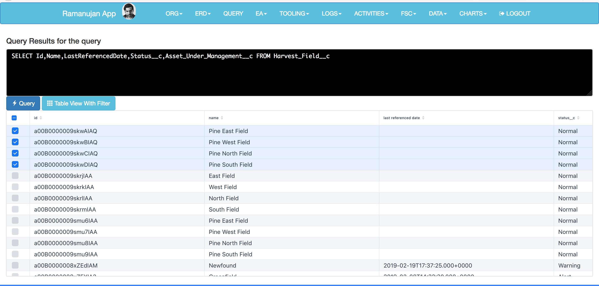
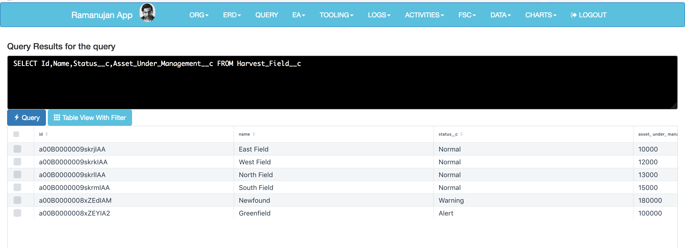
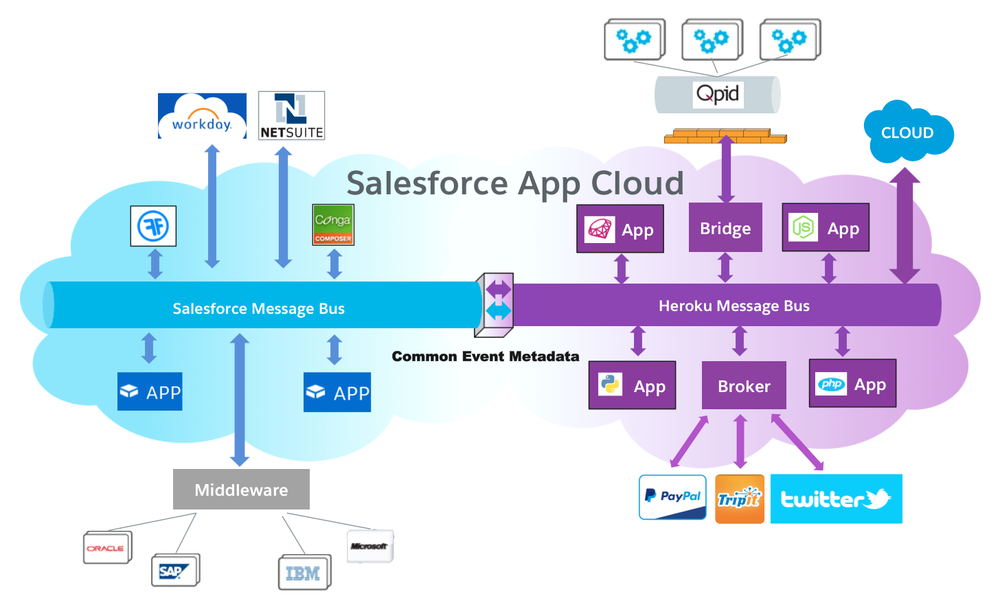

Large Data Volume
-
Using Bulk API
The Bulk API developed specifically to simplify the process of uploading large amounts of data. It is optimized for inserting, updating, upserting, and deleting large numbers of records asynchronously by submitting them in batches to Force.com, to be processed in the background.
Uploaded records are streamed to Force.com to create a new job. As the data rolls in for the job it is stored in temporary storage and then sliced up into user-defined batches. Even while your data is still being sent to the server, the Force.com platform submits the batches for processing.
Batch sizes should be adjusted based on processing times. Start with 5000 records and adjust the batch size based on processing time. If it takes more than five minutes to process a batch, it may be beneficial to reduce the batch size. If it takes a few seconds, the batch size should be increased. If you get a timeout error when processing a batch, split your batch into smaller batches, and try again.Batches can be processed in parallel or serially depending upon your needs. The Bulk API moves the functionality and work from your client application to the server. The API logs the status of each job and tries to reprocess failed records for you automatically.
Salesforce provides an additional API, Bulk API 2.0, which uses the REST API framework to provide similar capabilities to Bulk API. Use Bulk API 2.0 instead of Bulk API if you want a simplified process for inserting, updating, upserting, or deleting large sets of data. Bulk API 2.0 does not currently support query or queryAll.
Bulk API v2 does away with the need to manually break up data into batches. Simply submit jobs with the full set of records, and Salesforce automatically determines the most efficient way to batch the data.
Bulk API v2 simplifies the basic daily limits. Instead of having limits based on the number of Bulk jobs and batches, you’re simply limited to a maximum number of records (100 million) per 24 hour period.-
- Create a new job that specifies the object and action.
- Send data to the server in a number of batches.
- Once all data has been submitted, close the job. Once closed, no more batches can be sent as part of the job.
- Check status of all batches at a reasonable interval. Each status check returns the state of each batch.
- When all batches have either completed or failed, retrieve the result for each batch.
- Match the result sets with the original data set to determine which records failed and succeeded, and take appropriate action
- At any point in this process, you can abort the job. Aborting a job has the effect of preventing any unprocessed batches from being processed. It doesn't undo the effects of batches already processed.
-
To configure Data Loader to use the Bulk API for inserting, updating, upserting, deleting, and hard deleting records:
Open the Data Loader. Choose Settings | Settings. Select the Use Bulk API option. Click OK.
Folder content $ tree . ├── error022019081012672.csv ├── fieldMap.sdl ├── harvest_field-2.csv ├── harvest_field.csv └── success022019081012672.csv 0 directories, 5 files $ cat fieldMap.sdl #Mapping values #Wed Feb 20 20:09:30 EST 2019 Name=Name Asset_Under_Management__c=Asset_Under_Management__c Status__c=Status__c
Using Data Loader Configured to use Bulk API

$ cat success022019081012672.csv "ID","NAME","STATUS__C","ASSET_UNDER_MANAGEMENT__C","STATUS" "a00B0000009skwAIAQ","Pine East Field","Normal","310000","Item Created" "a00B0000009skwBIAQ","Pine West Field","Normal","312000","Item Created" "a00B0000009skwCIAQ","Pine North Field","Normal","313000","Item Created" "a00B0000009skwDIAQ","Pine South Field","Normal","315000","Item Created" $ cat error022019081012672.csv "NAME","STATUS__C","ASSET_UNDER_MANAGEMENT__C","ERROR"
Bulk API v1
1. Get an authenticated session ID, likely via a completely different API, such as the SOAP API. 2. Create a Bulk API v1 job. 3. Break up job data into batches. This can be a complex task and in many scenarios will involve: - Break up data to fit within the Bulk API v1 batch size limit for records, and batch size limit for total size for a batch. - Decide if you need to use special processing headers, like compression or PK Chunking. - Analyze data chunks for potential locking issues due to data skew, which could result in very slow or failed bulk processing. Re-organize batches as needed. - Minimize the amount of data post-processing actions (like triggers and Workflow rules) that might result in batch processing timeouts. - After all of this, if it turns out your batches take too long to process, go through the process of determining the best way to organize your batches all over again. 4. Upload data in batches. 5. Verify the batches uploaded properly. 6. Close the job, which tells Salesforce to start processing the records. 7. Check the status of the job. 8. If the job completes with no errors, we’re done. 9. If the job completes but encountered errors during processing, iterate over each batch in the job, collect results of successful and failed records for the batch, determine why the records failed, and re-assemble the data to submit a new job as needed.
Bulk API v2
1. Authenticate using OAuth. 2. Create a Bulk API v2 job. 3. Upload all your data. 4. Close the job, which tells Salesforce to start processing the data. 5. Check the status of the job. 6. If the job completes with no errors, we’re done. 7. If the job completes but encountered errors during processing, request the complete list of failed records with one API call, determine why the records failed, and submit a new job as needed.
1. Authenticate using OAuth - Issue requests to https://login.salesforce.com/services/oauth2/authorize to obtain an authentication token. 2. Create a job - Create a new Bulk API v2 job by issuing a POST request to /services/data/v44.0/jobs/ingest/ with the following request body: { "object" : "Contact", "contentType" : "CSV", "operation" : "insert" } This creates a job that will insert new Contact records. 3. Upload the data - Issue a PUT request using the JOB ID returned from the previous request to the following URI: /services/data/v44.0/jobs/ingest/JOB ID/batches/ The request body will be CSV data of all the records you want to upload (with the Content-Type request header set to text/csv). 4. Close the job Issue a PATCH request again using the JOB ID, to the following URI: /services/data/v44.0/jobs/ingest/JOB ID/ With the following request body: { "state" : "UploadComplete" } This tells Salesforce we’re done uploading data for the job, and Salesforce will start inserting the records. 5. Check the status of the job Issue a GET request to: /services/data/v44.0/jobs/ingest/JOB ID/ Look for a job state of JobComplete to know Salesforce is done processing the job. 6. Get errors for any failed records If the job status indicates that some records encountered errors during processing, issue a GET request to the following URI to get a full list of the failed records: /services/data/v44.0/jobs/ingest/JOB ID/failedResults/Start Job
# $1: jobstart.json export RESOURCE='/services/data/v41.0/jobs/ingest/' curl -X POST $URL/$RESOURCE -H "Authorization: Bearer $AT " -H "Content-Type: application/json" -d "@$1" | jqLoad Data
# $1: JOBID, $2:data.csv export RESOURCE=/services/data/v41.0/jobs/ingest/$1/batches curl -i -X PUT $URL/$RESOURCE -H "Authorization: Bearer $AT " -H "Content-Type: text/csv" -d "@$2"Close Job
# $1: JOBID, export RESOURCE=/services/data/v41.0/jobs/ingest/$1/ curl -X PATCH $URL/$RESOURCE -H "Authorization: Bearer $AT " -H "Content-Type: application/json" -d "@jobdone.json" # cat jobdone.json { "state" : "UploadComplete" }Check Status
export RESOURCE=/services/data/v41.0/jobs/ingest/$1/ curl -i -X GET $URL/$RESOURCE -H "Authorization: Bearer $AT " -H "Content-Type: application/json"Data Loaded

Trailhead: Use Bulk API
Using SFDX Plugin to use Bulk API

Event Based Data Sync
Well suited for near-real time data sync with external systems



References
Platform Events
Foreign Data Wrapper (FDW) and SQL/MED
Bulk API Developer Guide
Comparing Bulk API v1 and v2
Best Practices with Any Data Loader
KB: Best practices when you migrate data
Choosing a Method for Importing Data
FSC: Load Data -